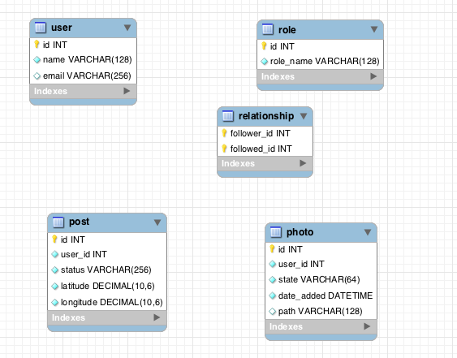
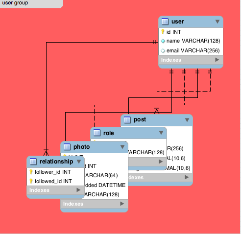
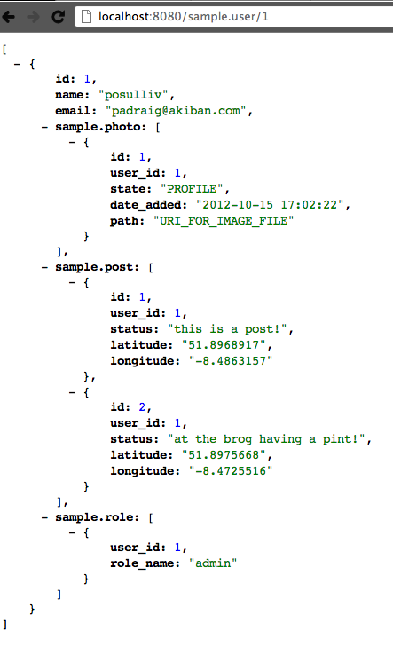

Akiban
Its Kind Of a Big Deal
What's Akiban?
Akiban is a new (soon to be fully open source) relational database featuring a unique storage optimization referred to as table grouping.
Table Grouping
Let there be peace in the Vietnam of Computer Science.
App Model in an ORM
class User < ActiveRecord::Base
.
.
has_many :posts
has_many :roles
has_many :photos
has_many :relationships
.
.
end
Vietnam
Peace
Why Does That Help?
Lots of reasons!
- Joins within a group are essentially "free"
- SQL that you know and love still works
- Retrieve an entire object in 1 request
SELECT ** FROM sometable
Installation
All that is required is Java!
Ubuntu Installation Example
sudo apt-get install -y python-software-properties
sudo apt-key adv --keyserver keyserver.ubuntu.com --recv 0AA4244A
sudo add-apt-repository "deb http://software.akiban.com/apt-developer lucid main"
sudo apt-get update
sudo apt-get install -y postgresql-client
sudo apt-get install -y akiban-server
Connecting from Command Line

$ psql -h localhost -p 15432 test
psql (9.0.5, server 8.4.7)
WARNING: psql version 9.0, server version 8.4.
Some psql features might not work.
Type "help" for help.
test=>
Connecting with Client Drivers
require 'sequel'
require 'pg'
require 'json'
hostname='postgres://localhost:15432/employees'
DB = Sequel.connect(hostname)
Sequel::Postgres.client_min_messages = nil
Sequel::Postgres.force_standard_strings = false
Sequel::Postgres.use_iso_date_format = false
DB << "SET OutputFormat TO 'json'"
ds = DB["SELECT ** FROM employees WHERE emp_no = ?", 10001]
jds = ds.collect {|row| JSON.parse(row[:JSON]) }
require 'pp'
pp jds
jds[0]['employees.titles'][0]['title']
Creating Table Groups
CREATE TABLE table_name
(
...
GROUPING FOREIGN KEY (column_name) REFERENCES parent_table_name
)
ALTER GROUP group_name DROP | ADD TABLE table_nameExecution Plans
sample=> explain select * from "user" where id = 1;
OPERATORS
-------------------------------------------------------
Project_Default(user.id, user.name, user.email)
AncestorLookup_Default(Index(user.PRIMARY) -> user)
IndexScan_Default(Index(user.PRIMARY), id = 1)
(3 rows)
sample=>
Nested Result Sets
sample=> set OutputFormat = 'json';
SET OutputFormat
sample=> select ** from "user" where id = 1;
{"id":1,"name":"posulliv","email":"padraig@akiban.com","sample.photo":[{"id":1,"user_id":1,"state":"PROFILE","date_added":"2012-10-15 17:02:22","path":"URI_FOR_IMAGE_FILE"}],"sample.post":[{"id":1,"user_id":1,"status":"this is a post!","latitude":"51.8968917","longitude":"-8.4863157"},{"id":2,"user_id":1,"status":"at the brog having a pint!","latitude":"51.8975668","longitude":"-8.4725516"}],"sample.role":[{"user_id":1,"role_name":"admin"}]}
(1 row)
sample=>
REST Module
http://localhost:8080/sample.user/1

Group Indexes
Can contain columns from more than 1 table.
Tables that are in a single branch of a group.
Creating Group Indexes
CREATE INDEX index_name ON table_name
(
column_name,
...
) USING LEFT | RIGHT JOIN
Multiple Indexes
Multiple indexes can be intersected or merged.
Spatial Indexes
Implemented using z-order
Transforms multi-dimensional data to one-dimension
Problems Solved:
- Points in region
- Nearest neighbor
Creating Spatial Indexes
CREATE INDEX index_name ON table_name
(
Z_ORDER_LAT_LON(latitude_column, longitude_column)
)
Configuring Akiban
/etc/akiban/config
- server.properties
- log4j.properties
- jvm.options
Information Schema
information_schema as defined in SQL standard
Some of the tables in the schema are:
- columns
- tables
- grouping_constraints
- indexes
- index_statistics
All explained in our online docs.
Monitoring Akiban
Tables in information_schema
- server_sessions
- server_instance_summary
- server_parameters
- storage_buffer_pools
- storage_trees
- storage_io_meters
Monitoring scripts available. Currently only support for Cacti.
Query Logging
Plain text, structured file readable by humans and easily parsable by tools.
# 2012-09-08 22:39:40.727
# session_id=6
# execution_time=53391
select t1.c1 from t1 join t2 on t1.c1 = t2.c2 where t1.c1 = 27578 order by t2.c2;
#
# 2012-09-08 22:40:06.63
# session_id=6
# execution_time=17782
select * from t2;
#
Logical Backups
$ akdump --help
DumpClient [--no-schemas] [-no-data] [-o file] [-h host] [-p port] schemas...
If no schemas are given, all are dumped.
$
Adapters for Other Databases
Adapter exists for MySQL.
Webinar covering MySQL deployment next week.
Working on adapters for other systems - Sybase, PostgreSQL, Oracle, etc.